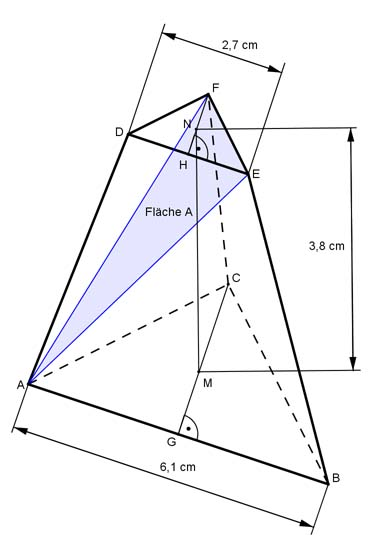
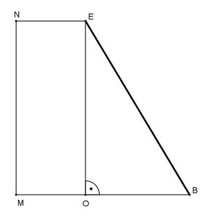
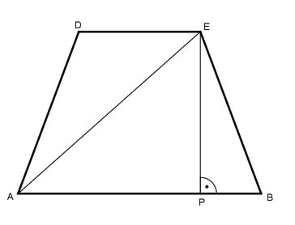
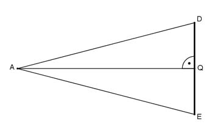
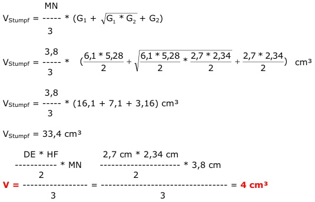

Aufgabe 265 Die Schnittfläche A unterteilt den regelmäßigen dreiseitigen Pyramidenstumpf in 2 Teilkörper. Wie groß sind die Schnittfläche A und das Volumen V des kleineren Teilkörpers?  GB = AB/2 = 6,1 cm/2 = 3,05 cm AB = BC Satz von Pythagoras im Dreieck GBC: BC² = GB² + GC² |-GB² GC² = BC² - GC² = 6,1² cm² - 3,05² cm² = 27,9 cm² |√ GC = 5,28 cm = h1 Satz von Pythagoras im Dreieck HEF: HE = DE/2 = 2,7 cm/2 = 1,35 cm DE = EF EF² = HE² + HF² |- HE² HF² = EF² - HE² = 2,7² cm² - 1,35² cm² = 5,47 cm² |√ HF = 2,34 cm  Schnitt MBEN: Satz von Pythagoras im Dreieck OBE: NE = NF = 2/3 der Dreieckshöhe HF = 2/3 * 2,34 cm = 1,56 cm MB = MC = 2/3 der Dreieckshöhe CG = 2/3 * 5,28 cm = 3,52 cm OB = MB - NE = 3,52 cm - 1,56 cm = 1,96 cm BE² = OB² + OE² = 3,8² cm² + 1,96² cm² = 18,28 cm² |√ BE = 4,28 cm  Seitenfläche ABED: Satz von Pythagoras im Dreieck PBE: AB - DE 6,1 cm - 2,7 cm PB = ----------- = --------------------- = 1,7 cm 2 2 BE² = PB² + PE² = | - PB² PE² = BE² - PB² = 4,28² cm² - 1,7² cm² = 15,43 cm² |√ PE = 3,93 cm = Höhe der Seitenfläche ABED Satz von Pythagoras im Dreieck APE: AP = AB - PB = 6,1 cm - 1,7 cm = 4,4 cm AE² = AP² + PE² = 4,4² cm² + 3,93² cm² = 34,81 cm² |√ AE = 5,9 cm = Schenkel der Seitenfläche A Seitenfläche A:  Satz von Pythagoras im Dreieck AEQ: EQ = DE/2 = 2,7 cm/2 = 1,35 cm AE² = AQ² + EQ² | - EQ2 AQ² = AE² - EQ² = 5,9² cm² - 1,35² cm² = 33 cn² |√ AQ = 5,74 cm = Höhe der Fläche A DE * AQ 2,7 cm * 5,74 cm A = --------- = -------------------- = 7,75 cm² 2 2 